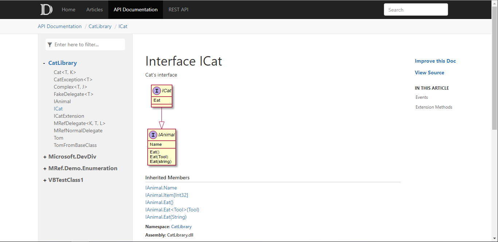

This is invalid markdown fragment test data
-
default

The default template
-
statictoc

The template similar to default template however with static toc. With static toc, the generated web pages can be previewed from local file system.
- In command:
-t statictoc - In
docfx.json :"template": "statictoc"
- In command:
-
mathew

A simple template
- Init:
git clone https://github.com/MathewSachin/docfx-tmpl.git mathew - In command:
-t default,mathew/src - In
docfx.json :"template":["default","mathew/src"]
- Init:
-
docfx-lightbox-plugin (Featherlight)

A template which adds a lightbox to each image, using the jquery plugin Featherlight.
- Init:
git clone https://github.com/roel4ez/docfx-lightbox-plugin.git docfx-lightbox-plugin - In command:
-t default,docfx-lightbox-plugin/templates/lightbox-featherlight - In
docfx.json :"template":["default","docfx-lightbox-plugin/templates/lightbox-featherlight"]
- Init:
-
docfx-lightbox-plugin (Bootstrap Modal)

A template which adds a lightbox to each image, using the Modal window from Bootstrap.
- Init:
git clone https://github.com/roel4ez/docfx-lightbox-plugin.git docfx-lightbox-plugin - In command:
-t default,docfx-lightbox-plugin/templates/bootstrap-modal - In
docfx.json :"template":["default","docfx-lightbox-plugin/templates/bootstrap-modal"]
- Init:
-
DocFx.Plugins.PlantUml
A template to render PlantUml diagrams from markdown code blocks.
- Init:
nuget install DocFx.Plugins.PlantUml -ExcludeVersion -OutputDirectory . - In command:
-t default,DocFx.Plugins.PlantUml/template - In
docfx.json :"template":["default","DocFx.Plugins.PlantUml/template"]
- Init: